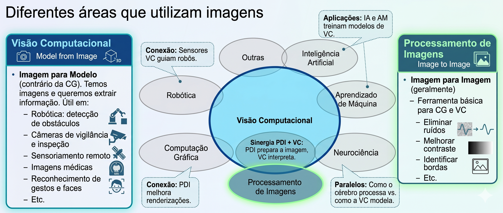
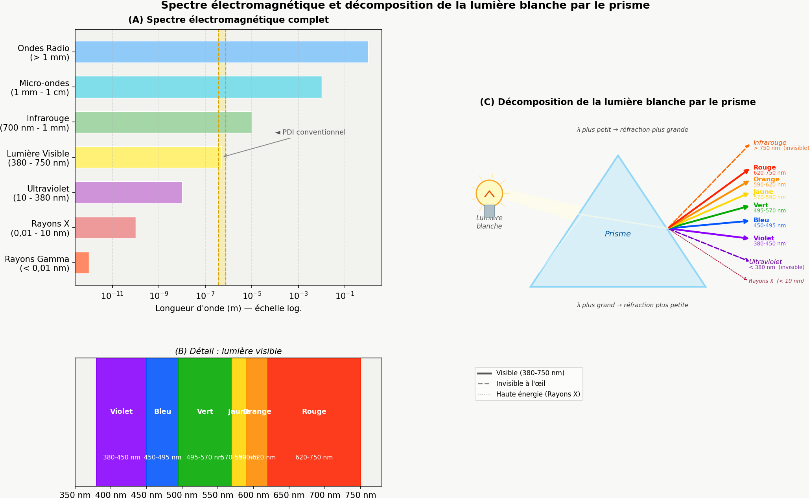
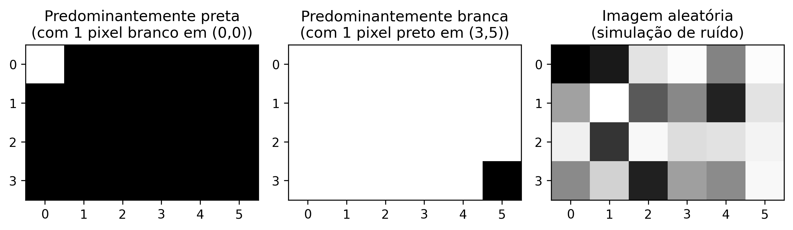

Ce chapitre inaugure la Partie 1 de l’ouvrage, consacrée aux fondements du Traitement Numérique des Images (TNI). Y sont présentés la représentation mathématique des images numériques et les principales méthodes pour leur manipulation, en utilisant le langage Python et la bibliothèque morph.py (ZAMPIROLLI, 2025).
1.1 Objectifs
À la fin de ce chapitre, vous serez capable de :
Comprendre la nature physique et mathématique de l’image numérique \(f(x,y)\).
Identifier les bandes du spectre électromagnétique pertinentes pour le traitement d’images numériques (TIN).
Configurer l’environnement de développement en Python.
Effectuer les opérations de base : lecture, affichage et enregistrement d’images.
Manipuler les structures de matrices (NumPy) sans tomber dans les pièges liés à la mémoire.
Accéder aux intensités des pixels et les modifier individuellement.
Appliquer un seuillage manuel.
1.2 Avant de commencer : Notebooks en Python
Ce matériel a été construit selon le concept de Literate Programming (Programmation lettrée), imaginé par Donald Knuth dans les années 1980 (KNUTH, 1984). Knuth — également créateur du système TeX pour la typographie numérique — a proposé que les programmes soient écrits comme un récit logique destiné aux êtres humains, entrelaçant code et documentation.
Pour exécuter une cellule, appuyez sur Shift + Entrée ou cliquez sur le bouton ▶️.
NoteNote sur le format
Dans les versions rendues (PDF ou HTML), le code est présenté dans des blocs statiques à des fins de lecture et de référence. L’exécution interactive nécessite l’accès via Google Colab (disponible en haut de la page) ou dans un environnement local via VSCode ou Jupyter Notebook.
1.3 Fondements
L’étude des systèmes basés sur l’image englobe un écosystème de disciplines intégrées qui transforment des données visuelles brutes en connaissances structurées. Tandis que certains domaines se concentrent sur la génération de représentations, d’autres se consacrent au traitement et à l’analyse de ces données pour soutenir des applications technologiques complexes.
Le diagramme présenté dans le Figure 1.1 établit la distinction et la complémentarité entre le Traitement Numérique des Images (TNI) et la Vision par Ordinateur (VO). Le TNI, mis en évidence en vert, se concentre sur la transformation d’image en image, visant l’amélioration de la qualité ou le prétraitement, comme la suppression du bruit et le rehaussement du contraste.
En revanche, la VO, signalée en bleu, se focalise sur l’interprétation du contenu visuel pour extraire des modèles ou des informations, tels que la reconnaissance d’objets et de gestes. La région d’intersection illustre la synergie entre les domaines, où le TNI prépare les données visuelles pour l’interprétation par la VO. La carte démontre également les interconnexions des deux disciplines avec des domaines tels que la Robotique, l’Infographie, l’Intelligence Artificielle (IA) et les Neurosciences.

Figure 1.1: Diagramme relationnel détaillant les distinctions fondamentales, les synergies et les interconnexions entre le TNI et la VO dans le contexte des systèmes basés sur l’image.
1.3.1 👁️ Vision par ordinateur
Focus :Image → Modèle (chemin inverse de l’infographie).
Objectif : Extraire des informations de haut niveau à partir d’images ou de vidéos.
Applications typiques :
Robotique – détection d’obstacles, localisation et navigation autonome.
Surveillance et inspection – reconnaissance d’événements, lecture de plaques, contrôle qualité.
Imagerie médicale – détection de tumeurs, segmentation d’organes, aide au diagnostic.
Interaction homme-machine – reconnaissance de gestes, expressions faciales, suivi oculaire.
Relation avec d’autres domaines : utilise des techniques d’apprentissage automatique et d’IA pour classer et interpréter les scènes ; sert d’« yeux » à la robotique.
1.3.2 🖼️ Traitement Numérique des Images (TNI)
Focus :Image → Image (généralement — transformation d’une image en une autre).
Objectif : Améliorer la qualité visuelle ou extraire des caractéristiques de bas niveau.
Applications courantes :
Élimination du bruit (filtres moyenne, médiane, gaussien).
Amélioration du contraste (égalisation d’histogramme, ajustement gamma).
Détection des contours (Sobel, Canny, Laplacien).
Segmentation (seuillage, croissance de régions, watershed).
Transformations géométriques (redimensionnement, rotation, correction de perspective).
Relation avec d’autres domaines (voir Table 1.1) :
C’est la base de la plupart des systèmes de VC (prétraitement).
L’infographie applique souvent le TNI pour le post-traitement (ex. : lissage, rehaussement).
Les techniques d’IA peuvent optimiser les paramètres de traitement (ex. : apprentissage de filtres).
Table 1.1: Connexion entre le PDI, la VC et d’autres domaines scientifiques.
Domaine
Relation avec le PDI et la VC
Intelligence artificielle
Fournit des modèles (réseaux de neurones, SVM) qui interprètent les sorties de la VC.
Robotique
Consomme des données de la VC pour prendre des décisions (navigation, manipulation).
Apprentissage automatique
Utilise des descripteurs extraits par le PDI/VC pour entraîner des classifieurs.
Infographie
Chemin inverse : modèle → image ; applique souvent le PDI pour un rendu réaliste.
Neuroscience
Inspire des modèles de PDI (ex. : filtres similaires aux cellules ganglionnaires de la rétine).
1.4 Étapes du PDI
Les étapes du PDI sont présentées dans la Figure 1.2 et peuvent être comprises comme une chaîne de transformations qui réduit la redondance des données afin d’en extraire du sens :
Niveau bas : agit directement sur les pixels de l’image bruitée pour effectuer des améliorations et des filtrages, en produisant en sortie une image propre ou rehaussée.
Niveau moyen : reçoit l’image traitée, effectue la segmentation et la description, transformant la matrice de pixels en attributs structurés (forme, taille et texture).
Niveau haut : utilise la table d’attributs pour alimenter des processus logiques et d’intelligence artificielle, aboutissant à la décision ou à la reconnaissance finale (comme le diagnostic médical).
Figure 1.2: Représentation du flux séquentiel de traitement : la sortie de chaque niveau devient l’entrée du niveau suivant.
A Figure 1.3 détaille la séquence complète du PDI, depuis la capture jusqu’à l’interprétation. Le flux commence à l’acquisition de l’image (1) et se poursuit avec l’amélioration (2) et la restauration (3). Ensuite, le contenu est isolé par la segmentation (4) et affiné par la morphologie (5). La transition cruciale se produit à la représentation et à la description (6), où les objets visuels sont convertis en données mathématiques (aire, périmètre, etc.), permettant la reconnaissance (7). Les processus auxiliaires incluent le traitement d’image couleur et la compression, qui contribuent à l’efficacité du stockage et de l’analyse.
Figure 1.3: Flux détaillé du PDI : de l’acquisition sensorielle à l’extraction d’attributs et à la reconnaissance automatisée, incluant le traitement couleur et la compression.
1.5 Formation de l’image et le spectre
Le processus de formation d’une image repose sur l’interaction entre la matière et l’énergie rayonnante. Essentiellement, une image est conçue lorsqu’un capteur enregistre le rayonnement issu de l’interaction avec un objet physique. Dans le contexte de la vision humaine et de la photographie conventionnelle, ce phénomène dépend d’une source de lumière qui éclaire la scène ; les caractéristiques des objets sont alors codées par le biais des variations d’intensité et de couleur de la lumière qui atteint le capteur, comme illustré dans la Figure 1.4.
Figure 1.4: Représentation du spectre visible et de sa position par rapport aux autres rayonnements électromagnétiques, mettant en évidence la variation des longueurs d’onde de 380 nm à 750 nm.
La lumière visible n’occupe qu’une petite bande du spectre électromagnétique — entre 380 nm (violet) et 750 nm (rouge) — comme illustré dans la Figure 1.5. Les capteurs numériques classiques opèrent dans cette même fenêtre, mais des équipements spécialisés peuvent capter des rayonnements invisibles à l’œil humain, tels que l’infrarouge et les rayons X. En PDI, l’image formée dépend directement de la sensibilité spectrale du capteur utilisé.

Figure 1.5: (A) Spectre électromagnétique complet en échelle logarithmique, avec mise en évidence de la bande visible. (B) Détail de la lumière visible (380-750 nm) et de ses couleurs. (C) Décomposition de la lumière blanche par le prisme : la longueur d’onde la plus courte subit une réfraction plus grande, séparant UV, visible et infrarouge.
À partir de ce processus physique d’acquisition, il devient possible de modéliser mathématiquement l’image numérique comme une fonction bidimensionnelle discrète, dans laquelle chaque point de la scène est représenté par des échantillons numériques d’intensité lumineuse, formalisant ainsi les concepts de pixel et d’image numérique présentés dans la section suivante.
1.6 Qu’est-ce qu’une image numérique ?
Une image numérique est constituée d’une grille de pixels (Picture Elements), où chaque pixel est la plus petite unité élémentaire de l’image.
AstuceQu’est-ce qu’un pixel ?
Un pixel est la plus petite unité adressable qui compose une image numérique. Chaque pixel occupe une position unique dans la grille et stocke une ou plusieurs valeurs numériques qui représentent son intensité ou sa couleur.
Représentation mathématique
Contrairement à une fonction continue, le domaine d’une image numérique est un plan rectangulaire fini \(\mathbb{E} \subset \mathbb{Z}^2\), qui représente la grille d’échantillonnage. Ce domaine est indexé par des coordonnées entières :
\[
\mathbb{E} = \{ (x, y) \in \mathbb{Z}^2 \mid 0 \le x < L,\; 0 \le y < H \}
\tag{1.1}\]
Où :
\(L\) : représente la largeur de l’image (nombre de colonnes).
\(H\) : représente la hauteur de l’image (nombre de lignes).
L’image numérique est une fonction qui associe à chaque paire de coordonnées \((x,y)\) une ou plusieurs valeurs décrivant l’apparence du pixel.
\[
f: \mathbb{E} \to \mathcal{V}
\tag{1.2}\]
L’ensemble \(\mathcal{V}\) définit les valeurs possibles pour le pixel (codomaine), variant selon le type d’image, comme illustré dans la Table 1.2.
Table 1.2: Principaux types d’image numérique et leurs ensembles respectifs de valeurs possibles pour chaque pixel.
Type d’image
\(\mathcal{V}\) (valeurs du pixel)
Représentation
Binaire
\(\{0, 1\}\) ou \(\{0, 255\}\)
⬛◻️
Niveaux de gris
\(\{0, 1, \dots, 255\}\)
░▒▓█
Couleur (RVB)
\(\{0, \dots, 255\}^3\) (triplets ordonnés de valeurs)
🟥🟩🟦
Exemple pratique : Une image couleur dans le modèle RVB peut être représentée mathématiquement par une fonction qui associe trois valeurs d’intensité à chaque pixel. Informatiquement, cette représentation correspond à trois matrices superposées — les canaux rouge (Red), vert (Green) et bleu (Blue) — dans lesquelles chaque élément stocke l’intensité lumineuse du canal respectif à une position donnée de l’image.
Pour rendre possibles les expériences pratiques de PDI et de VC, ce livre utilise l’écosystème scientifique de Python, en intégrant des bibliothèques dédiées à la manipulation matricielle, au traitement d’images et à la visualisation des résultats, présentées ci-dessous.
1.7 Configuration de l’environnement
Ce matériel utilise C++17 et la bibliothèque à en-tête unique morph.hpp, initialement proposée pour Python dans Zampirolli (2025). Ici, une version minimale et didactique de morph.py est utilisée, adaptée pour une compilation simple avec g++, comme présenté dans Table 1.3.
Chaque cellule de code est compilée et exécutée comme un processus isolé (%%writefile fichier.cpp suivi de g++). Contrairement au kernel Python, il n’y a pas d’état persistant entre les cellules : les images produites par une cellule sont enregistrées dans des fichiers pour être lues par la suivante.
Les Exercices de Programmation (EPs) présentés à la fin des chapitres peuvent être validés par le même module testsuite.py utilisé dans le parcours Python, qui compile la solution avec g++ et compare sa sortie avec les cas de test. Ainsi, les mêmes cas de test (.cases) peuvent valider des solutions en C++, Python et d’autres langages, à la fois dans les notebooks et dans Moodle/VPL.
Table 1.3: Principales bibliothèques et outils utilisés dans le parcours C++ de ce livre.
Bibliothèque / Outil
Fonction principale
g++ (C++17)
Compilation de chaque cellule de code
morph.hpp
Abstraction didactique des opérations de TNI
stb_image.h / stb_image_write.h
Lecture/écriture PNG/JPEG (sans OpenCV)
testsuite.py
Exécution et validation automatique des EPs
1.8 À propos de morph.hpp
Le morph.hpp est une version C++ minimale et didactique de morph.py : elle n’implémente que les fonctions utilisées dans ce livre (read, gray, randomImage, show, write, threshold, drawImg) et ne garantit pas de parité numérique avec l’implémentation Python — le critère est « ça compile et produit une image plausible », non « résultat identique bit à bit à Python ».
Les bibliothèques stb_image.h/stb_image_write.h (domaine public/MIT) sont intégrées au dépôt pour éviter les dépendances système (apt install) lors de la compilation dans Colab.
import os, urllib.requestos.makedirs("tmp/state", exist_ok=True) # artefacts de build de la piste C++ (.cpp, binaire, PNGs)url ="https://raw.githubusercontent.com/fzampirolli/pdi-vc/master/morph/config.py"ifnot os.path.exists("config.py"): urllib.request.urlretrieve(url, "config.py")import configconfig.setup(testsuite=True, cpp=True)from morph import mmfrom testsuite import TestSuite
1.9 Fondements des matrices — attention à la copie de références
Comme une image numérique peut être représentée par une matrice, il est important de comprendre comment créer et manipuler correctement les matrices. En C++, std::vector a une sémantique de valeur : copier le vecteur copie ses données. Ainsi, std::vector<std::vector<int>> m(3, std::vector<int>(2, 0)) crée effectivement trois lignes indépendantes — le constructeur de remplissage copie la ligne modèle trois fois.
AvertissementAttention à la copie de références
Le piège apparaît lorsque l’on utilise des pointeurs ou des références au lieu de copies. Dans std::vector<int> ligne(2, 0); std::vector<std::vector<int>*> m(3, &ligne);, les trois éléments de m pointent vers la même ligne, et modifier (*m[0])[0] modifie toutes les lignes. Il en va de même avec auto& ligne = m[0]; (référence — modifie la matrice), contrairement à auto ligne = m[0]; (copie — laisse la matrice intacte).
Pour visualiser ce comportement, on peut exécuter le code dans Python Tutor (qui exécute également C++ pas à pas) et comparer l’effet des copies et des références.
En pratique, pour le traitement numérique des images (TNI), on utilise la structure mm::Image de morph.hpp, qui possède également une sémantique de valeur : mm::Image b = a; copie les pixels, tandis que mm::Image& b = a; crée seulement un alias pour la même image. Le code suivant présente différentes manières de créer des images synthétiques, dont les résultats sont affichés dans la Figure 1.6.
%%writefile tmp/fig_imagens_sinteticas.cpp#define MM_OUT "tmp/fig_imagens_sinteticas.png"// Compile with: g++-std=c++17-o program program.cpp -I/path/to/morph/include -L/path/to/morph/lib -lmorph#include "morph.hpp"#include <iostream>#include <vector>#include <filesystem>int main() {//#| quarto-raw: false//#| label: fig-imagens-sinteticas//#| fig-cap: "Exemples d'images synthétiques représentées matriciellement."//#| echo: true//#| output: true// Création d'une image noire (zéros) de 4, 6 pixels mm::Image img_preta(4, 6); img_preta.at(0,0) =255;// pixel blanc dans le coin supérieur gauche// Création d'une image blanche (255) de 4, 6 pixels mm::Image img_branca(4, 6); std::fill(img_branca.data.begin(), img_branca.data.end(), 255); img_branca.at(3,5) =0;// pixel noir dans le coin inférieur droit// Création d'une image aléatoire pour les tests (bruit) mm::Image img_random = mm::randomImage(4, 6, 255); std::cout <<"Matrice aléatoire générée:"<< std::endl; std::cout << mm::drawImg(img_random) << std::endl; mm::show( std::vector<mm::Image>{img_preta, img_branca, img_random}, MM_OUT, std::vector<std::string>{"Principalement noire\n(avec 1 pixel blanc en (0,0))","Principalement blanche\n(avec 1 pixel noir en (3,5))","Image aléatoire\n(simulation de bruit)" },3 );// [pdi:panel-io] auto-generated — do not edit by handstd::filesystem::create_directories("tmp");mm::write(img_preta, "tmp/fig_imagens_sinteticas_0.png");mm::write(img_branca, "tmp/fig_imagens_sinteticas_1.png");mm::write(img_random, "tmp/fig_imagens_sinteticas_2.png");// [pdi:panel-io:end]return0;}
Writing tmp/fig_imagens_sinteticas.cpp
!g++-I. tmp/fig_imagens_sinteticas.cpp -o tmp/fig_imagens_sinteticas \&& ./tmp/fig_imagens_sinteticas \&& test -f "tmp/fig_imagens_sinteticas.png"\|| echo "⚠ mm::show não gravou tmp/fig_imagens_sinteticas.png"
mm.show( [ mm.read("tmp/fig_imagens_sinteticas_0.png"), mm.read("tmp/fig_imagens_sinteticas_1.png"), mm.read("tmp/fig_imagens_sinteticas_2.png"), ], titles=['Predominantemente preta\n(com 1 pixel branco em (0,0))','Predominantemente branca\n(com 1 pixel preto em (3,5))','Imagem aleatória\n(simulação de ruído)', ], cols=3, axis=True, figsize=(9, 3),)

Figure 1.6: Exemplos de imagens sintéticas representadas matricialmente.
1.10 Lecture et affichage d’images
Dans des bibliothèques telles que NumPy, OpenCV et scikit-image, les images numériques sont souvent représentées informatiquement sous forme de tableaux NumPy. Ainsi, les opérations matricielles et les concepts d’algèbre linéaire peuvent être appliqués directement au traitement d’images.
L’une des opérations fondamentales en traitement d’images est la lecture d’images. Dans la bibliothèque morph.py, la fonction mm.read() permet de charger des images à partir de fichiers locaux ou d’URL, comme illustré dans la Figure 1.7..
!g++-I. tmp/fig_01_natureza.cpp -o tmp/fig_01_natureza \&& ./tmp/fig_01_natureza \&& test -f "tmp/fig_01_natureza.png"\|| echo "⚠ mm::show não gravou tmp/fig_01_natureza.png"
Dimensões (H, W, Canais): 1365, 2048, 3
Tipo de dado: unsigned char
Exemplo: Captura RGB
mm.show(mm.read("tmp/fig_01_natureza.png"))
Figure 1.7: Mandrill (Mandrillus sphinx) em ambiente natural. Crédito: Julien Renoult (CC BY 4.0).
Variante : Téléchargement de l’image vers le stockage local
Dans les environnements où la lecture directe d’URL n’est pas disponible — en raison de restrictions réseau, de politiques de pare-feu ou de l’absence de connectivité — une variante consiste à télécharger préalablement l’image vers le système de fichiers local, puis à la charger avec mm::read(). Dans le volet C++, mm::read accepte également les URL directement (téléchargement interne via curl/wget) ; cette variante couvre le cas où l’on télécharge une fois et réutilise le fichier local. Dans l’exemple suivant, le fichier est enregistré sous le nom mandrill.png.
wget -O mandrill.png <URL> effectue le téléchargement de l’image et la stocke localement sous le nom spécifié ;
mm::read("mandrill.png") effectue la lecture du fichier directement à partir du système de fichiers, sans nécessiter de requêtes HTTP supplémentaires ;
Cette stratégie réduit la dépendance à la connectivité pendant l’exécution des expériences et évite des téléchargements répétés de la même image.
AstuceNote
Le préfixe ! est utilisé dans les environnements basés sur des carnets de notes, comme Jupyter Notebook, JupyterLab et Google Colab, pour exécuter des commandes du système d’exploitation directement dans des cellules de code. Dans les terminaux classiques, la commande doit être utilisée sans le préfixe !.
Si l’utilitaire wget n’est pas installé, on peut utiliser alternativement :
Comme nous l’avons vu, une image couleur dans l’espace RVB est représentée par la fonction :
\[
f: \mathbb{E} \to \{0,1,\dots,255\}^3
\]
C’est-à-dire que pour chaque pixel \((x,y)\), nous avons trois valeurs \((R,V,B)\) qui définissent sa couleur.
Conversion en Niveaux de Gris
Pour convertir une image RVB en niveaux de gris (grayscale), il est nécessaire de combiner les trois canaux en une seule valeur d’intensité \(g\), qui représente la luminosité perçue. Comme l’œil humain n’est pas également sensible au rouge, au vert et au bleu, on utilise une moyenne pondérée. La norme ITU-R BT.601 ({ITU-R}, 2011) définit les poids suivants :
\[
g = 0.299\,R + 0.587\,G + 0.114\,B
\tag{1.3}\]
Après le calcul, la valeur \(g\) est arrondie à l’entier le plus proche et ajustée à l’intervalle \([0, 255]\). Le résultat est une nouvelle image, désormais en niveaux de gris, représentée par :
À partir de l’image en niveaux de gris \(f_{\text{gris}}(x,y)\), une opération fondamentale est le seuillage, qui produit une image binaire (uniquement noir et blanc). Pour cela, on choisit une valeur de coupure \(T\) (généralement dans l’intervalle \([0,255]\)) et on définit :
Exemple : Avec \(T = 128\), les pixels dont l’intensité est supérieure à 128 deviennent blancs (255) ; les autres deviennent noirs (0).
Le seuillage est largement utilisé pour segmenter les objets du fond, extraire les contours ou créer des masques binaires pour un traitement ultérieur.
Remarque : La valeur 255 représente le blanc maximal dans les images 8 bits, tandis que 0 représente le noir absolu.
Exemple pratique de conversion et de seuillage
La Figure 1.8 illustre les principales étapes pour transformer une image couleur en niveaux de gris, puis la convertir en image binaire par seuillage. Le code suivant implémente ces étapes :
%%writefile tmp/fig_01_processamento_basico.cpp#define MM_OUT "tmp/fig_01_processamento_basico.png"#include "morph.hpp"#include <iostream>#include <vector>#include <string>#include <filesystem>int main() {// [pdi:state-io] auto-generated — do not edit by handmm::Image img = mm::read("tmp/state/img_24.png");// [pdi:state-io:end]//#| quarto-raw: false//#| label: fig-01-processamento-basico//#| fig-cap: "Processamento básico de imagens: (a) imagem original, (b) imagem em tons de cinza, (c) imagem binarizada por limiar (T=128)."//#| echo: true//#| output: true//1. Converter para Tons de Cinza mm::Image img_gray = mm::gray(img);//2. Aplicar limiar (Pixels >128 tornam-se 255, outros 0)int limiar =128; mm::Image img_binaria = mm::threshold(img_gray, limiar);// Uso da nova função mm::show( std::vector<mm::Image>{img, img_gray, img_binaria}, MM_OUT, std::vector<std::string>{"Original", "Tons de Cinza", "Binária (T=128)"},3 );// [pdi:state-io] auto-generated — do not edit by handstd::filesystem::create_directories("tmp/state");mm::write(img_gray, "tmp/state/img_gray_28.png");// [pdi:state-io:end]// [pdi:panel-io] auto-generated — do not edit by handstd::filesystem::create_directories("tmp");mm::write(img, "tmp/fig_01_processamento_basico_0.png");mm::write(img_gray, "tmp/fig_01_processamento_basico_1.png");mm::write(img_binaria, "tmp/fig_01_processamento_basico_2.png");// [pdi:panel-io:end]return0;}
Writing tmp/fig_01_processamento_basico.cpp
!g++-I. tmp/fig_01_processamento_basico.cpp -o tmp/fig_01_processamento_basico \&& ./tmp/fig_01_processamento_basico \&& test -f "tmp/fig_01_processamento_basico.png"\|| echo "⚠ mm::show não gravou tmp/fig_01_processamento_basico.png"
[1] Original
[2] Tons de Cinza
[3] Binária (T=128)
Figure 1.8: Processamento básico de imagens: (a) imagem original, (b) imagem em tons de cinza, (c) imagem binarizada por limiar (T=128).
1.12 Limiarisation par la méthode d’Otsu
Comme présenté dans la Équation 1.4, la limiarisation convertit une image en niveaux de gris en une image binaire en utilisant une valeur de seuil \(T\). Jusqu’à présent, nous avons fixé \(T = 128\) manuellement.
Cependant, le choix manuel de \(T\) n’est pas toujours trivial. La bibliothèque mm propose une alternative automatique : lorsque le seuil n’est pas fourni, la fonction mm::threshold(img_gray) calcule la valeur de \(T\) par la méthode d’Otsu (OTSU, 1979). Cette méthode, qui sera détaillée dans des chapitres ultérieurs, maximise la variance inter-classes de l’histogramme (fréquence de chaque niveau de gris), séparant automatiquement les pixels de l’objet et du fond.
Le code ci-dessous compare la limiarisation manuelle (\(T=128\)) avec la limiarisation automatique (Otsu). La binarisation par Otsu est effectuée avec mm::threshold(img_gray) ; comme l’API minimale de morph.hpp ne renvoie pas le \(T\) calculé, la valeur affichée dans le titre de la figure est récupérée avec cv2.threshold lors de l’étape d’affichage (même algorithme, même \(T\)).
%%writefile tmp/fig_01_otsu.cpp#define MM_OUT "tmp/fig_01_otsu.png"// Compile with: g++-std=c++17-o program program.cpp -I. -L. -lmorph#include "morph.hpp"#include <iostream>#include <string>#include <vector>#include <filesystem>int main() {// [pdi:state-io] auto-generated — do not edit by handmm::Image img_gray = mm::read("tmp/state/img_gray_28.png");// [pdi:state-io:end]// img_gray is already available as a mm::Image// Limiarização com T fixo (manual)int T_fixo =128; mm::Image img_bin_fixo = mm::threshold(img_gray, T_fixo);// Limiarização pelo método de Otsu (T automático)// T_otsu, img_bin_otsu = cv2.threshold(img_gray, 0, 255,// cv2.THRESH_BINARY + cv2.THRESH_OTSU)int T_otsu = mm::otsu(img_gray); mm::Image img_bin_otsu = mm::threshold(img_gray);// same T, Otsu when the arg is omitted std::cout <<"Limiar calculado por Otsu: T = "<< T_otsu <<"\n";// ou simplesmente:// img_bin_otsu = mm::threshold(img_gray)// Exibição lado a lado mm::show( std::vector<mm::Image>{img_gray, img_bin_fixo, img_bin_otsu}, MM_OUT, std::vector<std::string>{"Tons de Cinza", "Binária (T="+ std::to_string(T_fixo) +")", "Binária (Otsu, T="+ std::to_string(T_otsu) +")"},3 );// [pdi:panel-io] auto-generated — do not edit by handstd::filesystem::create_directories("tmp");mm::write(img_gray, "tmp/fig_01_otsu_0.png");mm::write(img_bin_fixo, "tmp/fig_01_otsu_1.png");mm::write(img_bin_otsu, "tmp/fig_01_otsu_2.png");// [pdi:panel-io:end]return0;}
Writing tmp/fig_01_otsu.cpp
!g++-I. tmp/fig_01_otsu.cpp -o tmp/fig_01_otsu \&& ./tmp/fig_01_otsu \&& test -f "tmp/fig_01_otsu.png"\|| echo "⚠ mm::show não gravou tmp/fig_01_otsu.png"
Limiar calculado por Otsu: T = 94
[1] Tons de Cinza
[2] Binária (T=128)
[3] Binária (Otsu, T=94)
Figure 1.9: Comparação entre limiarização manual (T=128) e automática (Otsu) sobre a imagem em tons de cinza.
La Figure 1.9 montre que le seuil obtenu par Otsu s’adapte automatiquement à l’image, permettant une binarisation plus efficace qu’une valeur fixe, en particulier lorsque les intensités de l’objet et du fond sont bien séparées dans l’histogramme. Cette technique est largement utilisée dans les systèmes de vision par ordinateur (VC) pour la binarisation de documents, la détection d’objets et le prétraitement d’images.
morph.hpp abstrait toute cette complexité : il suffit d’appeler mm::threshold(img_gray). Le seuil d’Otsu est calculé automatiquement et l’image binaire est renvoyée directement. Cette approche permet de se concentrer sur le concept, et non sur les détails d’implémentation.
1.13 Acesso aos Pixels
Na morph.hpp, a imagem é um mm::Image com um buffer linear data (linha após linha, canais intercalados) e o método at(y, x, c) para acesso individual, seguindo a convenção matricial linha (eixo Y) e coluna (eixo X): img.at(linha, coluna) para tons de cinza e img.at(linha, coluna, canal) para cada canal de uma imagem RGB.
O código da Figure 1.10 demonstra como extrair esses valores em imagens coloridas (RGB) e em tons de cinza, além de isolar a vizinhança imediata do ponto de interesse.
%%writefile tmp/fig_01_pixel_acesso.cpp#define MM_OUT "tmp/fig_01_pixel_acesso.png"#include "morph.hpp"#include <iostream>#include <string>#include <vector>int main() {// [pdi:state-io] auto-generated — do not edit by handmm::Image img = mm::read("tmp/state/img_24.png");mm::Image img_gray = mm::read("tmp/state/img_gray_28.png");// [pdi:state-io:end]// img et img_gray sont déjà initialisés ici//1. Coordonnées du pixel cible (ligne, colonne)int r =600, c =800;//2. Accès direct aux valeurs du pixel unsigned char pixel_cinza = img_gray.at(r, c); std::cout <<"Pixel cible ("<< r <<", "<< c <<"):\n"; std::cout <<" Tons de gris (scalaire) : "<< (int)pixel_cinza <<"\n"; std::cout <<" Coloré (canaux RGB) : R="<< (int)img.at(r, c, 0) <<", G="<< (int)img.at(r, c, 1) <<", B="<< (int)img.at(r, c, 2) <<"\n";//3. Voisinage 3x3 autour de (r, c); le pixel central est entre crochets std::cout <<"Matrice de voisinage 3x3 (tons de gris):\n";for (int dy =-1; dy <=1; dy++) { std::string ligne ="";for (int dx =-1; dx <=1; dx++) { unsigned char v = img_gray.at(r + dy, c + dx);if (dy ==0&& dx ==0) { ligne +="["+ std::to_string((int)v) +"]"; } else { std::string val = std::to_string((int)v);while (val.length() <3) val =" "+ val; ligne +=" "+ val +" "; } } std::cout <<" "<< ligne <<"\n"; }//4. Marque la position du pixel avec un carré rouge creux (bordure// de 3 px) sur une copie de l'image et affiche (équivalent du // point matplotlib). mm::Image marcada = img;int cote =20;// demi-côté du carré, en pixelsint epais =5;// épaisseur de la bordurefor (int x = c - cote; x <= c + cote +1; x++) {for (int w =0; w < epais; w++) { marcada.at(r - cote + w, x, 0) =255; marcada.at(r - cote + w, x, 1) =0; marcada.at(r - cote + w, x, 2) =0; marcada.at(r + cote - w, x, 0) =255; marcada.at(r + cote - w, x, 1) =0; marcada.at(r + cote - w, x, 2) =0; } }for (int y = r - cote; y <= r + cote +1; y++) {for (int w =0; w < epais; w++) { marcada.at(y, c - cote + w, 0) =255; marcada.at(y, c - cote + w, 1) =0; marcada.at(y, c - cote + w, 2) =0; marcada.at(y, c + cote - w, 0) =255; marcada.at(y, c + cote - w, 1) =0; marcada.at(y, c + cote - w, 2) =0; } } std::string titre ="Localisation du pixel ("+ std::to_string(r) +", "+ std::to_string(c) +")"; mm::show(marcada, MM_OUT, titre);return0;}
Writing tmp/fig_01_pixel_acesso.cpp
!g++-I. tmp/fig_01_pixel_acesso.cpp -o tmp/fig_01_pixel_acesso \&& ./tmp/fig_01_pixel_acesso \&& test -f "tmp/fig_01_pixel_acesso.png"\|| echo "⚠ mm::show não gravou tmp/fig_01_pixel_acesso.png"
Pixel cible (600, 800):
Tons de gris (scalaire) : 80
Coloré (canaux RGB) : R=92, G=78, B=67
Matrice de voisinage 3x3 (tons de gris):
82 96 105
84 [80] 95
82 76 83
Localisation du pixel (600, 800)
mm.show(mm.read("tmp/fig_01_pixel_acesso.png"))
Figure 1.10: Acesso a um pixel específico (r, c) e a representação de sua vizinhança na imagem.
Accès aux pixels en C++ (mm::Image) :
Niveaux de gris :img_gray.at(r, c) retourne un unsigned char (de 0 à 255) correspondant à l’intensité de gris du pixel.
RGB :img.at(r, c, 0), img.at(r, c, 1), img.at(r, c, 2) accèdent aux canaux R, G et B — un seul canal à la fois ; il n’existe pas de vecteur [R, G, B].
Voisinage \(3\times 3\) : parcouru par deux boucles imbriquées sur img_gray.at(r + dy, c + dx), avec dy, dx dans \(\{-1, 0, 1\}\) — il n’y a pas de découpage (slicing) comme dans NumPy. Ce balayage constitue la base des filtres spatiaux et des convolutions.
Il n’y a pas de tracé interactif (équivalent à plt.plot) : pour marquer la position du pixel, la cellule de code suivante dessine un carré rouge évidé autour de celui-ci sur une copie de l’image (marcada = img.copy(), puis marcada.at(...)) et l’affiche avec mm::show.
L’indexation est basée sur zéro : (0,0) correspond au coin supérieur gauche. La première dimension contrôle la hauteur (lignes/Y) et la seconde la largeur (colonnes/X).
1.14 Résumé
Dans ce chapitre, nous avons présenté les fondements de la représentation des images numériques : la définition du pixel, la structuration des images en matrices et l’impact de l’échantillonnage et de la quantification sur la qualité finale :
Image numérique = fonction \(f(x,y)\) qui associe des coordonnées à des intensités (scalaires ou vectorielles).
Domaine : ensemble fini \(\mathbb{E} = \{(x,y) \in \mathbb{Z}^2 \mid 0 \le x < L,\; 0 \le y < H\}\).
Types principaux : binaire (\(\mathcal{V} = \{0, 255\}\)), niveaux de gris (\(\mathcal{V} = [0,255]\)) et RVB (\(\mathcal{V} = [0,255]^3\)).
La bibliothèque morph.py (ou mm) offre des fonctions didactiques pour les opérations de base du TNI, telles que mm.gray(), mm.threshold(), mm.show_multiple().
Piège NumPy : n’utilisez jamais [[0]*n]*m pour créer des matrices — utilisez toujours np.zeros() ou np.ones().
Le seuillage convertit les niveaux de gris en image binaire ; la méthode d’Otsu détermine automatiquement la valeur de coupure en maximisant la variance interclasse.
Accès aux pixels via img[ligne, colonne], avec indexation à base zéro.
Le chapitre 2 abordera les histogrammes et l’égalisation de contraste.
1.15 🤖 Utilisation de Gemini Notebook comme tuteur complémentaire
Dans cette édition, en plus des notebooks interactifs sur Google Colab, Gemini Notebook est disponible comme outil d’étude complémentaire. La plateforme utilise exclusivement les documents fournis par l’auteur comme base de connaissances, garantissant des réponses cohérentes avec le contenu du livre.
Important🎓 Étudiez avec le tuteur intelligent
Accédez à l’environnement du chapitre via le lien ci-dessous et explorez particulièrement les options Guide d’étude et Conversation pour approfondir votre compréhension.
L’IA est une alliée puissante pour l’étude, mais le contenu généré peut contenir des erreurs ou des imprécisions. Consultez toujours des livres, des articles scientifiques et d’autres sources académiques fiables pour valider les informations. Dans la mesure du possible, exécutez les exemples pratiques fournis dans ce chapitre pour vérifier les résultats.
Fonctionnalités Disponibles sur la Plateforme
Le Gemini Notebook offre une suite avancée d’outils basés sur l’IA pour transformer le contenu statique du livre en une expérience d’apprentissage dynamique et multimédia. Comme illustré dans Figure 1.11, la plateforme utilise des techniques de RAG (Retrieval-Augmented Generation), fondées sur les travaux de Lewis (2020), pour baser les réponses strictement sur les documents fournis et minimiser l’apparition d’hallucinations.
Les principales fonctionnalités incluent :
Résumés Multimodaux (Audio et Vidéo) : Génération de conversations naturelles entre experts sous forme de Résumé Audio (style podcast) et de Résumé Vidéo, discutant des thèmes centraux du chapitre, comme les différences entre PDI et VC, ou l’interprétation de transformations telles que le seuillage et la méthode d’Otsu.
Visualisation de Structures (Carte Mentale et Infographie) : Création automatique de diagrammes qui connectent visuellement les concepts, par exemple, le flux de traitement depuis la capture de l’image numérique, en passant par la conversion en niveaux de gris, le seuillage et la segmentation binaire.
Outils d’Évaluation (Test et Cartes Didactiques) : Génération de Tests à choix multiples et de Cartes Didactiques (flashcards) pour la consolidation des connaissances, basés sur le texte original (ex. : questions sur la formule de conversion RVB→niveaux de gris ou sur le fonctionnement du seuil global et d’Otsu).
Aide à la Présentation (Slides et Rapports) : Aide à la structuration de Présentations de Slides et à la rédaction de Rapports techniques, facilitant la communication des résultats d’expériences avec des images.
Analyse de Données (Tableau de Données) : Organisation des données extraites du texte en tableaux structurés, aidant à la compréhension d’exemples pratiques, comme la comparaison entre différentes valeurs de seuil.
Chat Contextualisé : Permet de poser des questions directement sur le code et la théorie, comme : “Comment implémenter la conversion de RVB en niveaux de gris en utilisant les poids du standard ITU‑R BT.601 ?” ou “Que se passe-t-il avec l’image binaire si je choisis un seuil T=200 au lieu de T=128 ?”.
Figure 1.11: Studio do Gemini Notebook.
1.16 Liste d’exercices
(15 %) Avec vos propres mots, définissez image numérique et pixel. Donnez un exemple concret de la façon dont une image couleur (RVB) est représentée matriciellement dans l’ordinateur.
(15 %) Expliquez les différences entre image binaire, niveaux de gris (8 bits) et couleur RVB, en indiquant la plage de valeurs possibles pour chaque pixel dans chaque type.
(20 %) En considérant la formule de conversion RVB → niveaux de gris du standard ITU‑R BT.601 : \[g = 0,299\,R + 0,587\,V + 0,114\,B\] Calculez la valeur du pixel en niveaux de gris pour \((R,V,B) = (80, 180, 30)\). Arrondissez à l’entier le plus proche.
(20 %) Qu’est-ce que la seuillage (thresholding) ? Expliquez la différence entre choisir un seuil \(T\) fixe (par ex. : \(T=128\)) et utiliser la méthode d’Otsu pour la détermination automatique du seuil. En quelques mots, comment la méthode d’Otsu choisit-elle le seuil ?
(15 %) Dans le contexte de la bibliothèque didactique mm discutée dans le chapitre, répondez :
(7,5 %) Comment accède-t-on à la valeur du pixel à la position (ligne=50, colonne=60) d’une image en niveaux de gris img_gray ?
(7,5 %) Quel est l’avantage d’utiliser mm.threshold(img_gray) sans passer le seuil ? Comparez avec l’appel équivalent dans OpenCV.
(15 %) Que retourne la propriété img.shape pour une image NumPy au format RVB ? Donnez un exemple concret avec une image de 640×480 pixels.
Références du chapitre
Les fondements théoriques de ce chapitre comprennent les ouvrages suivants sur le TNI et la VC :
Gonzalez (2018) pour les fondements du Traitement Numérique des Images (TNI).
Singh (2019) pour la mise en œuvre pratique des méthodes de traitement et d’analyse d’images.
Szeliski (2022) pour l’étude de la VC et des algorithmes fondamentaux.
Bradski (2008) pour l’application de la bibliothèque OpenCV dans un environnement Python.
Lewis (2020) pour le concept de génération augmentée par récupération (RAG), utilisé pour le support du traitement des informations de ce matériel.
1.17 💻 Partie Pratique avec Exercices de Programmation
🎯 Objectif de ce Cahier
Les Exercices de Programmation (EPs) présentés ci-dessous peuvent également être soumis dans les activités Moodle (activités VPL) qui fournissent une rétroaction automatique.
Ce cahier a été développé pour surmonter les limitations d’utilisation de Moodle. Avec lui, il faut :
Développer : Écrire et éditer votre solution directement dans l’environnement Colab.
Valider : Tester votre code localement en utilisant les mêmes cas de test que Moodle.
Organiser : Sauvegarder vos codes des activités VPL de manière sécurisée.
Évaluer : Lorsque vous êtes connecté à Moodle, il suffit de copier votre solution et de cliquer sur Évaluer dans Moodle (si vous êtes sur le réseau de l’UFABC) pour enregistrer votre note officielle.
⚙️ Instructions Étape par Étape
Dans un environnement d’exécution (comme VSCode, Jupyter ou Colab), suivez l’ordre ci-dessous pour configurer l’environnement et valider vos exercices :
Préparation de l’Environnement
Exécutez la cellule de code ci-dessous pour télécharger morph.py et testsuite.py depuis le dépôt du cours — uniquement s’ils n’existent pas déjà dans le répertoire local. Avec les deux fichiers dans ./, le notebook et les sous-processus du TestSuite trouvent le module sans configurations de chemin supplémentaires.
Note : Le script testsuite.py recherchera automatiquement les cas de test dans all/{cap}/cases sur GitHub.
Écriture du Code
Enregistrez votre solution dans une cellule de code en utilisant la commande magique %%writefile. Le nom du fichier doit suivre le modèle EPX_Y.*, où X est le chapitre, Y est l’exercice et * est l’extension du langage.
Exemple :%%writefile EP01_01.py
Téléchargement
Téléchargez morph.py et testsuite.py en exécutant la cellule ci-dessous :
import os, urllib.requestos.makedirs("tmp/state", exist_ok=True) # artefacts de build de la piste C++ (.cpp, binaire, PNGs)url ="https://raw.githubusercontent.com/fzampirolli/pdi-vc/master/morph/config.py"ifnot os.path.exists("config.py"): urllib.request.urlretrieve(url, "config.py")import configconfig.setup(testsuite=True, cpp=True)from morph import mmfrom testsuite import TestSuite
Après avoir enregistré le fichier avec votre solution, exécutez la commande ci-dessous (dans une nouvelle cellule) pour évaluer les tests automatiques :
TestSuite("EP01_01.extensão").run()
Remplacez l’extension selon le langage utilisé :
Langage
Extension
Python
.py
Java
.java
C
.c
C++
.cpp
JavaScript
.js
R
.r
Comment cela fonctionne : Le TestSuite télécharge les cas de test depuis GitHub, exécute votre programme avec chaque entrée et compare la sortie avec celle attendue – calculant automatiquement votre note.
Pour tester directement du code Python, sans enregistrer de fichier, utilisez run_code(codigo) en passant le code comme chaîne de caractères dans une variable codigo :
Votre programme doit lire l’entrée standard (clavier).
Python : Utilisez input().
Autres langages : Utilisez la commande de lecture standard équivalente (cin, Scanner, etc.).
🔹 Configuration de l’IA dans Colab
Pour un meilleur apprentissage, il est recommandé de désactiver la complétion automatique de code par l’IA, car elle ne sera pas disponible lors des évaluations. Par exemple dans le navigateur Chrome :
Allez dans : Outils > Paramètres > IA générative
Décochez : Activer la génération de code
🔹 Intégrité Académique (Plagiat)
Cette ressource de tests locaux s’applique aux EPs sans variations. Cependant :
Individualité : Chaque étudiant doit développer sa propre solution.
Détection de Similarité : Le professeur utilise des outils qui détectent les copies, même avec un changement de noms de variables ou d’espaces blancs.
1.17.1 EP01_01 📏 Trois métriques de distance en TNI
Dans cette activité, vous devez écrire un programme qui calcule les trois distances classiques en TNI : euclidienne (L2), City‑Block (L1) et Chessboard (L∞).
Lisez 4 nombres réels qui représentent les coordonnées : \(A_x, A_y, B_x, B_y\).
Calculez les trois distances à l’aide des formules :
Affichez les trois résultats, chacun sur une ligne, formatés avec deux décimales, dans l’ordre : euclidienne, City‑block, Chessboard.
📌 Important :
Utilisez les fonctions mathématiques standard de votre langage : math.sqrt, abs (ou fabs) et max.
La sortie doit contenir uniquement les nombres (un par ligne), sans texte supplémentaire.
Voir un simulateur interactif pour cette question à la ?fig-01-sim-ep0101-distancia (graphique avec glissement des points et visualisation des trois métriques).
Dans une image 1000×1000 pixels (1 million de pixels), calculer la distance de chaque pixel à un point de référence exige 1 million d’opérations. Le choix de la métrique affecte la performance :
La fonction sqrt est computationnellement plus coûteuse que des opérations comme l’addition, la soustraction, la multiplication et la valeur absolue. Sur les processeurs modernes, la différence peut être faible (environ 1,5× à 3×), mais dans les systèmes embarqués ou dans des boucles de millions d’itérations, tout gain compte. Pour cette raison, lorsque l’objectif est uniquement de comparer des distances (ex. : trouver le point le plus proche), utilisez la distance euclidienne au carré.
1.17.1.2 📋 Tâche (spécification pour VPL)
Entrée :
Une seule ligne avec quatre nombres réels : Ax Ay Bx By
Sortie :
Trois lignes, chacune avec un nombre réel à deux décimales (euclidienne, City‑block, Chessboard).
1.17.1.3 📌 Exemples
Entrée
Sortie
Observation
0 0 3 4
5.00 7.00 4.00
Triangle 3‑4‑5
0 0 1 1
1.41 2.00 1.00
Diagonale unitaire
Exemple de test de sqrt en Python, avec timeit isolant chaque opération :
%%writefile tmp/mm_out_1.cpp#include <iostream>#include <chrono>#include <cmath>#include <iomanip>int main() { const int N =50'000'000; auto apenas_soma = []() { double a =3.0, b =4.0;return a + b; }; auto soma_e_sqrt = []() { double a =3.0, b =4.0;return std::sqrt(a*a + b*b); }; auto start_soma = std::chrono::high_resolution_clock::now();for (int i =0; i < N;++i) { apenas_soma(); } auto end_soma = std::chrono::high_resolution_clock::now(); double t_soma = std::chrono::duration<double>(end_soma - start_soma).count(); auto start_sqrt = std::chrono::high_resolution_clock::now();for (int i =0; i < N;++i) { soma_e_sqrt(); } auto end_sqrt = std::chrono::high_resolution_clock::now(); double t_sqrt = std::chrono::duration<double>(end_sqrt - start_sqrt).count(); std::cout << std::fixed << std::setprecision(3); std::cout <<"Soma simple : "<< t_soma <<" s\n"; std::cout <<"Soma + sqrt : "<< t_sqrt <<" s\n"; std::cout <<"Razão (sqrt/soma) : "<< std::setprecision(2) << (t_sqrt/t_soma) <<"x\n";return0;}
Soma simple : 0.147 s
Soma + sqrt : 0.241 s
Razão (sqrt/soma) : 1.64x
1.17.1.4 🐍 Python
Il suffit de créer une cellule de code normale et d’y insérer le code Python. L’entrée peut être simulée à l’aide de input(), qui fonctionne normalement.
Exemple de cellule :
%%writefile EP01_01.py# Code Pythonx1,y1,x2,y2 =int(input()), int(input()), int(input()), int(input())# Calcul des différencesdx =abs(x2 - x1)dy =abs(y2 - y1)# 1. Distance euclidienne (L2)dist_euclidiana = (dx**2+ dy**2)**0.5# 2. Distance City-block / Manhattan (L1)dist_city_block = dx + dy# 3. Distance Chessboard / Chebyshev (Linf)dist_chessboard =max(dx, dy)# Sortie formatée selon les cas de testprint(f"{dist_euclidiana:.2f}")print(f"{dist_city_block:.2f}")print(f"{dist_chessboard:.2f}")
Writing EP01_01.py
# Attend que vous saisissiez 4 nombres entiers lors de l'exécution de cette cellule.# Dans Jupyter ou Google Colab, la magie %run -i permet au script de lire depuis le clavier.# Dans un terminal classique, vous utiliseriez : python3 EP01_01.py (sans le '!' et sans '%run').# %run -i EP01_01.py
# Envoie 4 entiers comme entrée standard (stdin) au script EP01_01.py en utilisant un pipe!echo -e "0\n0\n4\n4"| python3 EP01_01.py
5.66
8.00
4.00
TestSuite("EP01_01.py").run()
📥 Tentative : https://raw.githubusercontent.com/fzampirolli/pdi-vc/master/all/cap01/casos/EP01_01.cases
✅ Téléchargement réussi
📋 5 cas chargé(s) depuis casos/EP01_01.cases
🔍 Test de Python : EP01_01.py
✔️ Cas 1 : OK✔️ Cas 2 : OK✔️ Cas 3 : OK✔️ Cas 4 : OK✔️ Cas 5 : OK
📊 Résultat : 5/5 (100.0 %)
🎉 Félicitations ! Tous les tests ont réussi.
1.17.1.5 ☕ Java
Pour exécuter Java dans Colab, vous devez utiliser une cellule avec le préfixe %%writefile pour enregistrer le code dans un fichier, le compiler et l’exécuter.
✔️ EP01_01.cases existe déjà dans casos/
📋 5 cas chargé(s) depuis casos/EP01_01.cases
🔍 Test de Java : EP01_01.java
✔️ Cas 1 : OK✔️ Cas 2 : OK✔️ Cas 3 : OK✔️ Cas 4 : OK✔️ Cas 5 : OK
📊 Résultat : 5/5 (100.0 %)
🎉 Félicitations ! Tous les tests ont réussi.
1.17.1.6 💻 C
De manière similaire, utilisez %%writefile pour enregistrer le code, puis compilez et exécutez. Pour C, nous utilisons le compilateur GCC.
# Installer le compilateur GCC et les outils de build# Le build-essential inclut gcc, g++, make, etc.import platform, shutil, subprocessdef instalar_gcc():if shutil.which("gcc"):print("✅ GCC déjà disponible.");returnif platform.system() !="Linux":print("⚠️ Mac : xcode-select --install | Windows : WSL ou MinGW");returntry: import google.colab; cmd = ["apt-get", "install", "-y", "build-essential"]exceptImportError: cmd = ["sudo", "apt-get", "install", "-y", "build-essential"] subprocess.run(cmd, check=True)print("✅ build-essential installé !")instalar_gcc()
# Compile le fichier .c pour générer l'exécutable EP01_01# -lm est utilisé pour lier la bibliothèque mathématique (math.h) si nécessaire!gcc EP01_01.c -o EP01_01 -lm!echo -e "0\n0\n4\n4"| ./EP01_01
5.66
8.00
4.00
TestSuite("EP01_01.c").run()
✔️ EP01_01.cases existe déjà dans casos/
📋 5 cas chargé(s) depuis casos/EP01_01.cases
🔍 Test de C : EP01_01.c
✔️ Cas 1 : OK✔️ Cas 2 : OK✔️ Cas 3 : OK✔️ Cas 4 : OK✔️ Cas 5 : OK
📊 Résultat : 5/5 (100.0 %)
🎉 Félicitations ! Tous les tests ont réussi.
1.17.1.7 💻 C++
De manière similaire à Java, utilisez %%writefile pour enregistrer le code, puis compilez et exécutez. Rappelez-vous que, dans Colab, il est également nécessaire d’installer ce qui suit :
# Installer le compilateur G++ pour C++# Le build-essential inclut g++, make, etc.import platform, shutil, subprocessdef instalar_gpp():if shutil.which("g++"):print("✅ G++ déjà disponible.");returnif platform.system() !="Linux":if platform.system() =="Darwin":print("⚠️ Mac : xcode-select --install")else:print("⚠️ Windows : utilisez WSL ou MinGW (https://www.mingw-w64.org)")returntry: import google.colab; cmd = ["apt-get", "install", "-y", "build-essential"]exceptImportError: cmd = ["sudo", "apt-get", "install", "-y", "build-essential"] subprocess.run(cmd, check=True)print("✅ Compilateur C++ prêt.")instalar_gpp()
✔️ EP01_01.cases existe déjà dans casos/
📋 5 cas chargé(s) depuis casos/EP01_01.cases
🔍 Test de C++ : EP01_01.cpp
✔️ Cas 1 : OK✔️ Cas 2 : OK✔️ Cas 3 : OK✔️ Cas 4 : OK✔️ Cas 5 : OK
📊 Résultat : 5/5 (100.0 %)
🎉 Félicitations ! Tous les tests ont réussi.
1.17.1.8 🌐 JavaScript (Node.js)
Pour JavaScript, utilisez %%writefile pour créer le fichier et exécutez-le avec Node :
✔️ EP01_01.cases existe déjà dans casos/
📋 5 cas chargé(s) depuis casos/EP01_01.cases
🔍 Test de Node.js : EP01_01.js
✔️ Cas 1 : OK✔️ Cas 2 : OK✔️ Cas 3 : OK✔️ Cas 4 : OK✔️ Cas 5 : OK
📊 Résultat : 5/5 (100.0 %)
🎉 Félicitations ! Tous les tests ont réussi.
1.17.1.9 📊 R
Dans Colab, on peut exécuter du code R directement en utilisant la magie %%R.
Le programme doit lire quatre nombres (x1, y1, x2, y2) et afficher la distance euclidienne avec deux décimales.
# Installer R et Rscript# Le r-base installe l'environnement R complet, y compris Rscriptimport platform, shutil, subprocessdef instalar_r():if shutil.which("R"):print("✅ R déjà disponible.");returnif platform.system() !="Linux":if platform.system() =="Darwin":print("⚠️ Mac : https://cran.r-project.org/bin/macosx/")else:print("⚠️ Windows : https://cran.r-project.org/bin/windows/base/")returntry: import google.colab; cmd = ["apt-get", "install", "-y", "r-base"]exceptImportError: cmd = ["sudo", "apt-get", "install", "-y", "r-base"] subprocess.run(cmd, check=True)print("✅ Environnement R prêt.")instalar_r()
✅ R déjà disponible.
Pour tester de la même manière que dans les exemples précédents, il faut utiliser l’entrée standard (stdin) dans le terminal ou adapter le code comme ci-dessous :
✔️ EP01_01.cases existe déjà dans casos/
📋 5 cas chargé(s) depuis casos/EP01_01.cases
🔍 Test de R : EP01_01.r
✔️ Cas 1 : OK✔️ Cas 2 : OK✔️ Cas 3 : OK✔️ Cas 4 : OK✔️ Cas 5 : OK
📊 Résultat : 5/5 (100.0 %)
🎉 Félicitations ! Tous les tests ont réussi.
1.17.2 EP01_02 📊 Performance Prédictive — Métriques de ML en VC
Dans cette activité, vous entrerez dans le monde de l’Apprentissage Automatique (Machine Learning). Votre objectif est d’évaluer la performance d’un classificateur binaire en calculant des métriques à partir d’une Matrice de Confusion.
1.17.2.1 🧠 Pourquoi la bonne métrique est-elle importante ?
Imaginez un détecteur de pièces de R$ 1,00. L’impact de l’erreur définit la métrique prioritaire :
Métrique
Exemple Pratique
Importance en TDI/VC
Exactitude
Comptage de Grains
Utile lorsque les classes sont équilibrées (ex : la moitié des grains défectueux, l’autre moitié sains).
Précision
Sécurité/Biométrie
Cruciale pour éviter les Faux Positifs (ex : ne pas permettre à un imposteur d’accéder à un système par erreur de reconnaissance).
Sensibilité
Santé (Tumeurs)
Cruciale pour éviter les Faux Négatifs (ex : ne pas laisser une tumeur passer inaperçue lors d’un examen radiologique).
Score F1
Billets de Banque
Idéale pour un équilibre entre ne pas rejeter de vrais billets et ne pas accepter de faux billets.
Affichez les résultats formatés avec deux décimales, un par ligne.
📌 Important :
Utilisez la division en virgule flottante pour éviter des résultats tronqués.
L’ordre de sortie doit être : Exactitude, Précision, Sensibilité et Score F1.
Consultez la simulation interactive de cet EP sur la ?fig-01-sim-ep0102.
1.17.2.3 📌 Exemple d’Exécution
Entrée
Sortie
Observation
40
0.75
Exactitude
10
0.73
Précision
15
0.80
Sensibilité
35
0.76
Score F1
(Note : VP=40, FN=10, FP=15, VN=35. Nombre total de cas = 100)
%%writefile EP01_02.cpp// your solution
Writing EP01_02.cpp
TestSuite("EP01_02.cpp").run()
📥 Tentative : https://raw.githubusercontent.com/fzampirolli/pdi-vc/master/all/cap01/casos/EP01_02.cases
✅ Téléchargement réussi
📋 5 cas chargé(s) depuis casos/EP01_02.cases
🔍 Test de C++ : EP01_02.cpp
⚠️ EP01_02.cpp : fichier vide (moins de 3 lignes). Tests ignorés.
1.17.3 EP01_03 📈 Mean Average Precision (mAP) — Courbe Précision‑Sensibilité
1.17.3.1 🧠 Pourquoi le mAP est‑il la métrique‑standard ?
Dans l’EP01_02, vous avez vu que le choix du seuil modifie significativement la Précision et la Sensibilité. Le mAP (Mean Average Precision) résout cela : il évalue le modèle à plusieurs seuils (chaque seuil doit générer une matrice de confusion différente) et résume la performance par l’aire sous la courbe Précision‑Sensibilité (P‑S).
Alors que le F1‑Score examine un unique point d’équilibre, le mAP considère la courbe entière. Plus il est proche de 1,0, meilleur est le détecteur à tous les seuils et classes (ex. : pièces de 25, 50 et 1 réal).
Pour chaque seuil (t), classez les échantillons : predito = 1 se confiança ≥ t, senão 0.
Calculez VP, FP, FN, VN et obtenez Précision((t)) et Sensibilité((t)).
Construisez la courbe P‑S : paires (Sensibilité((t)), Précision((t))), triées par Sensibilité croissante.
Monotonisez la Précision : \[P_{\text{mono}}[i] = \max_{j \ge i} P[j]\]
Calculez l’AP (aire sous la courbe monotone) en utilisant la règle du trapèze (approximation plus précise que la simple somme de Riemann) : \[AP = \sum_{i=1}^{m-1} \frac{P_{\text{mono}}[i-1] + P_{\text{mono}}[i]}{2} \cdot (S[i] - S[i-1])\]
mAP = moyenne des AP de toutes les classes. Dans cet EP, il n’y a qu’1 classe, donc mAP = AP.
Note
📐 Différence résumée :
La somme de Riemann approxime l’aire par des rectangles, pouvant sous‑estimer ou surestimer. La règle du trapèze utilise des trapèzes, réduisant l’erreur en considérant la moyenne entre les valeurs aux extrémités de l’intervalle, étant généralement plus précise pour des fonctions lisses par morceaux, comme la courbe Précision‑Sensibilité.
1.17.3.3 📋 Tâche
Lisez un entier n (quantité d’échantillons). Ensuite, lisez n lignes, chacune avec : verdade (0 ou 1) et confiança (float 0.0–1.0).
Calculez et imprimez, pour le seuil 0.85 (index 9 de la liste) :
Matrice de Confusion (VP, FN, FP, VN)
Acurácia, Précision, Sensibilité et F1‑Score
Ensuite, pour tous les seuils, imprimez :
Précisions brutes, Précisions monotones et Sensibilités, séparées par ,
mAP final
1.17.3.4 📌 Important
Seuil fixe pour les métriques individuelles : 0.85
Division sécurisée : si le dénominateur est nul, utilisez 0
Formatage : deux décimales
Monotonisez de la fin vers le début
La ?fig-01-sim-ep0103-map présente une simulation de cette question
1.17.3.6 🐍 Astuce pour calculer l’AP (avec la règle du trapèze)
def calcular_AP(verdades, confiancas, limiares): m =len(limiares) precisoes = [0.0] * m sensibilidades = [0.0] * mfor i inrange(m): p, s = calcular_metricas(verdades, confiancas, limiares[i]) precisoes[m-1-i] = p sensibilidades[m-1-i] = s prec_mono = precisoes.copy()for i inrange(m-2, -1, -1):if prec_mono[i] < prec_mono[i+1]: prec_mono[i] = prec_mono[i+1] AP =0.0for i inrange(1, m):# Règle du trapèze : moyenne des hauteurs multipliée par la base area_trapezio = (prec_mono[i-1] + prec_mono[i]) /2.0 AP += area_trapezio * (sensibilidades[i] - sensibilidades[i-1])return precisoes, prec_mono, sensibilidades, AP
%%writefile EP01_03.cpp// your solution
Writing EP01_03.cpp
TestSuite("EP01_03.cpp").run()
📥 Tentative : https://raw.githubusercontent.com/fzampirolli/pdi-vc/master/all/cap01/casos/EP01_03.cases
✅ Téléchargement réussi
📋 5 cas chargé(s) depuis casos/EP01_03.cases
🔍 Test de C++ : EP01_03.cpp
⚠️ EP01_03.cpp : fichier vide (moins de 3 lignes). Tests ignorés.
1.17.4 EP01_04 🖼️ Lecture et Informations d’une Image sous forme de Matrice
Dans cette activité, vous devez écrire un programme qui traite une image numérique représentée comme une matrice de pixels en niveaux de gris.
Lisez deux entiers L et C, représentant le nombre de lignes et de colonnes.
Lisez les L * C valeurs entières qui composent la matrice de l’image (chaque valeur entre 0 et 255).
Calculez et imprimez les informations suivantes :
Le nombre de lignes.
Le nombre de colonnes.
La valeur du pixel le plus grand (Maximum).
La valeur du pixel le plus petit (Minimum).
La Moyenne arithmétique de tous les pixels.
📌 Important :
La sortie doit suivre exactement le format étiqueté (ex : Linhas: X).
La valeur de la moyenne doit être formatée avec deux décimales.
Voir un simulateur interactif pour cette question dans ?fig-01-sim-ep0104-estatisticas (grille interactive pour visualiser les intensités et effectuer les calculs en temps réel).
1.17.4.1 🧠 Pourquoi cela importe-t-il ? – L’Image comme Données
Toute image numérique est, au fond, une structure de données. En niveaux de gris 8 bits, chaque pixel est une valeur scalaire. Extraire des statistiques de base est la première étape pour :
Opération
Utilité Pratique
Maximum/Minimum
Identifier si l’image est « délavée » (faible contraste) ou saturée.
Moyenne
Calculer la luminosité globale de la scène pour des ajustements d’exposition.
Normalisation
Redimensionner les valeurs vers des intervalles comme \([0, 1]\) dans les réseaux de neurones.
1.17.4.2 📋 Tâche (spécification pour VPL)
Entrée :
La première ligne contient l’entier L (lignes).
La deuxième ligne contient l’entier C (colonnes).
Les lignes suivantes contiennent les éléments de la matrice.
📥 Tentative : https://raw.githubusercontent.com/fzampirolli/pdi-vc/master/all/cap01/casos/EP01_04.cases
✅ Téléchargement réussi
📋 5 cas chargé(s) depuis casos/EP01_04.cases
🔍 Test de C++ : EP01_04.cpp
⚠️ EP01_04.cpp : fichier vide (moins de 3 lignes). Tests ignorés.
1.17.5 EP01_05 🔄 Négatif d’une Image en Niveaux de Gris
Dans cette activité, il faut écrire un programme qui calcule le négatif d’une image numérique.
Lire deux entiers L et C, représentant le nombre de lignes et de colonnes.
Lire les valeurs entières qui composent la matrice de l’image.
Pour chaque pixel, appliquer la transformation d’inversion :
\[pixel_{négatif} = 255 - pixel_{original}\]
Afficher la matrice résultante, en conservant le format original (L lignes et C colonnes).
📌 Important :
Les valeurs de chaque ligne dans la sortie doivent être séparées par un espace blanc.
La sortie doit contenir uniquement les nombres de la matrice résultante.
Voir un simulateur interactif pour cette question à la ?fig-01-sim-ep0105-negativo (comparaison en temps réel entre la matrice originale et son négatif).
Le négatif est une transformation linéaire de base qui inverse l’échelle de luminosité. C’est un outil essentiel pour que l’œil humain identifie les détails clairs qui sont « cachés » dans des fonds plus sombres, et il est largement utilisé dans :
Application
Utilité
Imagerie Médicale
Améliore la visualisation des anomalies dans les tissus denses (ex : Rayons X).
Astronomie
Mettre en évidence les galaxies et les nébuleuses ténues contre le vide de l’espace.
Arts Numériques
Effets esthétiques et préparation de masques de sélection.
1.17.5.2 📋 Tâche (spécification pour VPL)
Entrée :
La première ligne contient l’entier L.
La deuxième ligne contient l’entier C.
Les lignes suivantes contiennent les éléments de la matrice.
Sortie :
La matrice inversée avec L lignes et C colonnes.
1.17.5.3 📌 Exemples
Entrée
Sortie
Remarque
2
3
0 128 255
50 100 255
255 127 0
205 155 55
Là où il y avait 0 (noir), devient 255 (blanc)
%%writefile EP01_05.cpp// your solution
Writing EP01_05.cpp
TestSuite("EP01_05.cpp").run()
📥 Tentative : https://raw.githubusercontent.com/fzampirolli/pdi-vc/master/all/cap01/casos/EP01_05.cases
✅ Téléchargement réussi
📋 7 cas chargé(s) depuis casos/EP01_05.cases
🔍 Test de C++ : EP01_05.cpp
⚠️ EP01_05.cpp : fichier vide (moins de 3 lignes). Tests ignorés.
Dans cette activité, vous devez écrire un programme qui convertit des pixels colorés (RVB) en niveaux de gris en utilisant la pondération physiologique de la norme ITU-R BT.601.
Lisez deux entiers L et C, représentant le nombre de lignes et de colonnes.
Lisez L × C triplets d’entiers, où chaque triplet représente les canaux R (Rouge), G (Vert) et B (Bleu) d’un pixel.
Pour chaque pixel, calculez la valeur de gris (\(g\)) à l’aide de la formule :
\[g = \text{round}(0.299 \times R + 0.587 \times G + 0.114 \times B)\]
Affichez la matrice résultante (L lignes et C colonnes) contenant les valeurs entières converties.
📌 Important :
Utilisez la fonction round() de votre langage pour garantir l’arrondi correct à l’entier le plus proche.
La sortie doit contenir uniquement les valeurs de gris, en préservant la structure de la matrice (séparées par des espaces sur la ligne).
Consultez un simulateur interactif pour cette question sur la ?fig-01-sim-ep0106-rgb-gray (ajustez les curseurs pour voir comment chaque couleur contribue à la luminosité finale).
1.17.6.1 🧠 Pourquoi ne pas utiliser simplement la moyenne ?
L’œil humain ne perçoit pas toutes les couleurs avec la même intensité. Nous sommes beaucoup plus sensibles au Vert qu’au Bleu en raison de notre évolution biologique. La norme ITU-R BT.601 utilise des poids spécifiques pour créer une image en niveaux de gris qui semble naturellement correcte pour notre vision :
Canal
Poids
Perception humaine
🟢 Vert
58,7 %
Sensibilité maximale (distinction du feuillage).
🔴 Rouge
29,9 %
Sensibilité moyenne.
🔵 Bleu
11,4 %
Faible sensibilité (tons plus sombres).
1.17.6.2 📋 Tâche (spécification pour VPL)
Entrée :
La première ligne contient l’entier L.
La deuxième ligne contient l’entier C.
Les lignes suivantes contiennent des triplets d’entiers R G B pour chaque pixel.
Sortie :
La matrice des niveaux de gris avec L lignes et C colonnes.
1.17.6.3 📌 Exemples
Entrée
Sortie
Observation
1
3
255 0 0 0 255 0 0 0 255
76 150 29
Remarquez comment le Vert (150) est plus lumineux que le Bleu (29)
%%writefile EP01_06.cpp// your solution
Writing EP01_06.cpp
TestSuite("EP01_06.cpp").run()
📥 Tentative : https://raw.githubusercontent.com/fzampirolli/pdi-vc/master/all/cap01/casos/EP01_06.cases
✅ Téléchargement réussi
📋 7 cas chargé(s) depuis casos/EP01_06.cases
🔍 Test de C++ : EP01_06.cpp
⚠️ EP01_06.cpp : fichier vide (moins de 3 lignes). Tests ignorés.
1.17.7 EP01_07 ⚫ Seuillage Manuel : Image Binaire
Dans cette activité, vous devez écrire un programme qui réalise la segmentation d’une image par seuillage (thresholding).
Lisez deux entiers L et C, représentant les dimensions de la matrice.
Lisez un entier T, qui sera la valeur du seuil (coupure).
Lisez les valeurs entières de la matrice.
Pour chaque pixel \(p\), appliquez la règle de binarisation suivante :
\[\text{résultat} = \begin{cases} 255 & \text{si } p > T \\ 0 & \text{si } p \le T \end{cases}\]
Affichez la matrice résultante contenant uniquement les valeurs 0 ou 255.
📌 Important :
Faites attention à l’opérateur : le pixel ne devient blanc (255) que s’il est strictement supérieur à \(T\).
La sortie doit conserver la structure matricielle (L lignes et C colonnes).
Voir un simulateur interactif pour cette question sur la ?fig-01-sim-ep0107-limiarizacao (ajustez le curseur de \(T\) pour observer comment les objets sont isolés du fond).
1.17.7.1 🧠 Qu’est-ce que la Segmentation ?
Le seuillage est la méthode la plus simple pour séparer les objets d’intérêt du fond de l’image. En transformant les niveaux de gris en noir et blanc pur, on crée une carte binaire qui facilite le comptage des objets ou l’identification des formes :
Valeur du Pixel (\(p\))
Condition
Résultat Final
Sombre (\(p \le T\))
Fond/Bruit
0 (Noir)
Clair (\(p > T\))
Objet/Mise en évidence
255 (Blanc)
1.17.7.2 📋 Tâche (spécification pour VPL)
Entrée :
La première ligne contient l’entier L.
La deuxième ligne contient l’entier C.
La troisième ligne contient l’entier T (seuil).
Les lignes suivantes contiennent les éléments de la matrice.
Sortie :
La matrice binarisée (0 ou 255) avec L lignes et C colonnes.
1.17.7.3 📌 Exemples
Entrée
Sortie
Observation
2
4
128
0 100 128 200
50 129 255 64
0 0 0 255
0 255 255 0
Notez que la valeur 128 est devenue 0 (car \(128 \le 128\))
%%writefile EP01_07.cpp// your solution
Writing EP01_07.cpp
TestSuite("EP01_07.cpp").run()
📥 Tentative : https://raw.githubusercontent.com/fzampirolli/pdi-vc/master/all/cap01/casos/EP01_07.cases
✅ Téléchargement réussi
📋 7 cas chargé(s) depuis casos/EP01_07.cases
🔍 Test de C++ : EP01_07.cpp
⚠️ EP01_07.cpp : fichier vide (moins de 3 lignes). Tests ignorés.
1.17.8 EP01_08 🎨 Remappage par Plage d’Intensité
Dans cette activité, vous devez écrire un programme qui applique des transformations linéaires distinctes à différentes régions d’intensité de l’image.
Lisez deux entiers L et C, représentant les dimensions de la matrice.
Lisez les entiers T (seuil), δ₁ (delta 1) et δ₂ (delta 2).
Lisez les valeurs entières de la matrice.
Pour chaque pixel \(p\), appliquez la règle de remappage conditionnel :
\[\text{résultat} = \begin{cases} p + \delta_1 & \text{si } p < T \\ p + \delta_2 & \text{si } p \ge T \end{cases}\]
Affichez la matrice résultante avec les nouvelles valeurs d’intensité.
📌 Important :
δ₁ est le décalage appliqué aux pixels sombres (en dessous du seuil).
δ₂ est le décalage appliqué aux pixels clairs (supérieurs ou égaux au seuil).
Les cas de test garantissent que le résultat sera toujours dans l’intervalle valide de 0 à 255, il n’est donc pas nécessaire de gérer la saturation ou les arrondis.
La sortie doit conserver la structure de la matrice (L lignes et C colonnes).
1.17.8.1 🧠 Transformation Conditionnelle des Pixels
En Traitement Numérique des Images (TNI), nous devons souvent traiter les régions de manière indépendante. Cette technique permet, par exemple, d’éclaircir uniquement les ombres d’une photographie (en augmentant les pixels sombres) sans saturer la luminosité des zones déjà claires, ou vice versa.
Plage d’Intensité
Condition
Opération
Pixels Sombres
\(p < T\)
\(p + \delta_1\)
Pixels Clairs
\(p \ge T\)
\(p + \delta_2\)
1.17.8.2 📋 Tâche (spécification pour VPL)
Entrée :
La première ligne contient les entiers L et C.
La deuxième ligne contient les entiers T, δ₁ et δ₂.
Les lignes suivantes contiennent les éléments de la matrice.
Sortie :
La matrice transformée avec L lignes et C colonnes, avec des valeurs séparées par des espaces.
1.17.8.3 📌 Exemples
Entrée
Sortie
Observation
2 4 128 60 -40 0 100 150 255 80 128 200 30
60 160 110 215 140 88 160 90
Les pixels < 128 ajoutent 60. Les pixels ≥ 128 soustraient 40.
%%writefile EP01_08.cpp// your solution
Writing EP01_08.cpp
TestSuite("EP01_08.cpp").run()
📥 Tentative : https://raw.githubusercontent.com/fzampirolli/pdi-vc/master/all/cap01/casos/EP01_08.cases
✅ Téléchargement réussi
📋 8 cas chargé(s) depuis casos/EP01_08.cases
🔍 Test de C++ : EP01_08.cpp
⚠️ EP01_08.cpp : fichier vide (moins de 3 lignes). Tests ignorés.
1.17.9 EP01_09 🏁 Modèle de Damier : Matrice d’Échecs
Dans cette activité, vous devez écrire un programme qui génère une image synthétique selon le motif d’un damier.
Lisez deux entiers L (lignes) et C (colonnes).
Générez une matrice où les valeurs alternent entre 0 (noir) et 1 (blanc).
La logique de remplissage doit suivre la règle de parité :
L’élément à la position \((0,0)\) est toujours 0.
Un pixel à la position \((i, j)\) sera 1 si la somme des indices \((i + j)\) est impaire.
Un pixel à la position \((i, j)\) sera 0 si la somme des indices \((i + j)\) est paire.
📌 Important :
Les couleurs doivent alterner correctement aussi bien horizontalement que verticalement.
La sortie doit être la matrice imprimée ligne par ligne, avec les éléments séparés par un espace.
Voir un simulateur interactif pour cette question sur la ?fig-01-sim-ep0109-xadrez (ajustez les dimensions pour visualiser la construction de la grille et la sortie textuelle correspondante).
1.17.9.1 🧠 Motifs Synthétiques
Créer des motifs géométriques est un exercice fondamental pour maîtriser la logique des indices dans les matrices. En Traitement Numérique des Images, le motif du damier n’est pas seulement esthétique ; il est largement utilisé pour :
Application
Utilité
Calibrage de Caméra
Estimer les paramètres intrinsèques et extrinsèques de l’objectif.
Correction de Distorsion
Identifier et corriger l’effet de “barillet” ou “coussinet” sur les objectifs grand-angle.
Cartographie 3D
Projeter des motifs connus pour reconstruire des surfaces dans les systèmes de lumière structurée.
1.17.9.2 📋 Tâche (spécification pour VPL)
Entrée :
Une ligne contenant l’entier L (lignes).
Une ligne contenant l’entier C (colonnes).
Sortie :
La matrice d’échecs avec L lignes et C colonnes, imprimée avec des espaces entre les éléments.
1.17.9.3 📌 Exemples
Entrée
Sortie
Observation
3
4
0 1 0 1
1 0 1 0
0 1 0 1
Notez que chaque ligne commence par l’inverse de la précédente
%%writefile EP01_09.cpp// your solution
Writing EP01_09.cpp
TestSuite("EP01_09.cpp").run()
📥 Tentative : https://raw.githubusercontent.com/fzampirolli/pdi-vc/master/all/cap01/casos/EP01_09.cases
✅ Téléchargement réussi
📋 7 cas chargé(s) depuis casos/EP01_09.cases
🔍 Test de C++ : EP01_09.cpp
⚠️ EP01_09.cpp : fichier vide (moins de 3 lignes). Tests ignorés.
1.17.10 EP01_10 📄 Métadonnées : Lecture de fichier PGM
Dans cette activité, vous devez lire un fichier image au format PGM (Portable Gray Map) et extraire ses dimensions à partir de l’en-tête.
Le format PGM (P2) est un fichier texte simple (ASCII) qui stocke des images en niveaux de gris.
Le fichier possède un en-tête structuré de la manière suivante :
Version : L’identifiant P2.
Commentaires : Lignes optionnelles commençant par # (à ignorer).
Dimensions : Deux entiers représentant la Largeur et la Hauteur.
Maximum : Un entier représentant l’intensité maximale (généralement 255).
Après l’en-tête, suivent les données des pixels.
📌 Important :
Lecture du fichier : Vous devez ouvrir le fichier indiqué dans l’exemple en utilisant la fonction open() de Python.
Ordre de sortie : Contrairement à l’ordre présent dans le fichier, la sortie attendue doit être au format de tuple : (Hauteur, Largeur, Canaux).
Comme les fichiers PGM sont en niveaux de gris, le nombre de Canaux est toujours 1.
Consultez un simulateur interactif pour cette question sur ?fig-01-sim-ep0110-pgm (ajustez les dimensions pour voir comment l’en-tête ASCII est généré).
1.17.10.1 🧠 Comprendre le format PGM
Le format PGM est l’un des plus simples pour le traitement d’images. Étant en texte pur, il permet de visualiser les métadonnées et même les valeurs des pixels en ouvrant le fichier dans un bloc-notes :
Composant
Exemple
Signification
Nombre magique
P2
Identifie qu’il s’agit d’un PGM au format texte (ASCII).
Commentaire
# CREATOR...
Ligne informative ignorée par le processeur.
Dimensions
397 343
397 colonnes (Largeur) et 343 lignes (Hauteur).
Intensité
255
Définit la valeur du blanc pur (échelle de 0 à 255).
1.17.10.2 📋 Tâche (spécification pour VPL)
Entrée :
Aucune entrée via le clavier. Le programme doit lire le fichier "aula01fig03b.pgm" présent dans le répertoire d’exécution.
Sortie :
Un tuple contenant (Hauteur, Largeur, 1).
1.17.10.3 📌 Exemples
Nom du fichier
Sortie attendue
Remarque
“aula01fig03b.pgm”
(343, 397, 1)
Notez l’inversion de l’ordre : la Hauteur en premier
NoteNote
Le fichier nécessaire pour ce TP sera téléchargé automatiquement depuis le dépôt via le code suivant :
%%writefile tmp/mm_out_2.cpp#include <iostream>#include <string>#include <fstream>#include <cstdlib>//URL de base pour les imagesconst std::string BASE_URL ="https://raw.githubusercontent.com/fzampirolli/pdi-vc/master/all/cap01/imagens";const std::string file="aula01fig03b.pgm";// Fonction pour télécharger un fichier (simplifié)bool downloadFile(const std::string& url, const std::string& filename) { std::string command ="curl -s -o "+ filename +" "+ url;int result = std::system(command.c_str());if (result ==0&& std::ifstream(filename).good()) { std::cout <<"✅ Fichier téléchargé: "<< filename << std::endl;return true; } std::cout <<"❌ Erreur: Non trouvé"<< std::endl;return false;}int main() {// Vérifier si le fichier existe déjà std::ifstream fileCheck(file);if (!fileCheck.good()) { std::string url = BASE_URL +"/"+file; downloadFile(url, file); }return0;}
📥 Tentative : https://raw.githubusercontent.com/fzampirolli/pdi-vc/master/all/cap01/casos/EP01_10.cases
✅ Téléchargement réussi
📋 1 cas chargé(s) depuis casos/EP01_10.cases
🔍 Test de C++ : EP01_10.cpp
⚠️ EP01_10.cpp : fichier vide (moins de 3 lignes). Tests ignorés.
1.17.11 EP01_11 📈 Analyse de voisinage : Filtre de maximum 1D
Dans cette activité, vous devez implémenter un filtre morphologique simple de maximum opérant sur un signal unidimensionnel (vecteur).
Lisez un entier n, représentant la taille du vecteur.
Lisez les n éléments entiers qui composent le vecteur original v1.
Créez un nouveau vecteur v2, où chaque position \(i\) est le résultat de la comparaison entre l’élément courant et ses voisins immédiats :
\[v2[i] = \max(v1[i-1],\; v1[i],\; v1[i+1])\]
📌 Important :
Bords : Aux extrémités du vecteur (indices \(0\) et \(n-1\)), le voisinage ne contient que deux éléments (l’élément lui-même et le seul voisin disponible). À l’indice \(0\), comparez uniquement \(v1[0]\) et \(v1[1]\). Au dernier indice, comparez uniquement \(v1[n-2]\) et \(v1[n-1]\).
Sortie : Affichez l’en-tête « v2 : » suivi des valeurs du vecteur résultant, une par ligne.
Consultez un simulateur interactif pour cette question dans la ?fig-01-sim-ep0111-filtro-maximo (survolez les résultats avec la souris pour visualiser la fenêtre de voisinage utilisée dans le calcul).
1.17.11.1 🧠 Pourquoi analyser les voisins ?
En traitement d’images, la valeur d’un pixel est rarement isolée ; elle dépend du contexte qui l’entoure. Le Filtre de Maximum est la base de l’opération de Dilatation en morphologie mathématique, servant à :
Fonction
Effet visuel
Rehaussement
Étend les structures brillantes et « épaissit » les objets clairs.
Suppression du bruit
Élimine les petits points noirs (bruit « sel et poivre » sombre).
Remplissage
Ferme les petits trous ou lacunes dans les formes binaires.
1.17.11.2 📋 Tâche (spécification pour VPL)
Entrée :
Un entier n.
Sur les lignes suivantes, les n éléments entiers du vecteur.
Sortie :
La chaînev2 : sur la première ligne.
Sur les lignes suivantes, chaque élément de v2 (un par ligne).
1.17.11.3 📌 Exemples
Entrée
Sortie
Observation
5
10
20
5
30
15
v2 :
20
20
30
30
30
À l’indice 1 : max(10, 20, 5) = 20
%%writefile EP01_11.cpp// your solution
Writing EP01_11.cpp
TestSuite("EP01_11.cpp").run()
📥 Tentative : https://raw.githubusercontent.com/fzampirolli/pdi-vc/master/all/cap01/casos/EP01_11.cases
✅ Téléchargement réussi
📋 7 cas chargé(s) depuis casos/EP01_11.cases
🔍 Test de C++ : EP01_11.cpp
⚠️ EP01_11.cpp : fichier vide (moins de 3 lignes). Tests ignorés.


1.17.3.2 🔢 Comment le mAP est‑il calculé — pas à pas
Seuils fixes (utilisez toujours cette liste) :
Pour chaque seuil (t), classez les échantillons :
predito = 1 se confiança ≥ t, senão 0.Calculez VP, FP, FN, VN et obtenez Précision((t)) et Sensibilité((t)).
Construisez la courbe P‑S : paires (Sensibilité((t)), Précision((t))), triées par Sensibilité croissante.
Monotonisez la Précision :
\[P_{\text{mono}}[i] = \max_{j \ge i} P[j]\]
Calculez l’AP (aire sous la courbe monotone) en utilisant la règle du trapèze (approximation plus précise que la simple somme de Riemann) :
\[AP = \sum_{i=1}^{m-1} \frac{P_{\text{mono}}[i-1] + P_{\text{mono}}[i]}{2} \cdot (S[i] - S[i-1])\]
mAP = moyenne des AP de toutes les classes. Dans cet EP, il n’y a qu’1 classe, donc mAP = AP.
📐 Différence résumée :
La somme de Riemann approxime l’aire par des rectangles, pouvant sous‑estimer ou surestimer. La règle du trapèze utilise des trapèzes, réduisant l’erreur en considérant la moyenne entre les valeurs aux extrémités de l’intervalle, étant généralement plus précise pour des fonctions lisses par morceaux, comme la courbe Précision‑Sensibilité.